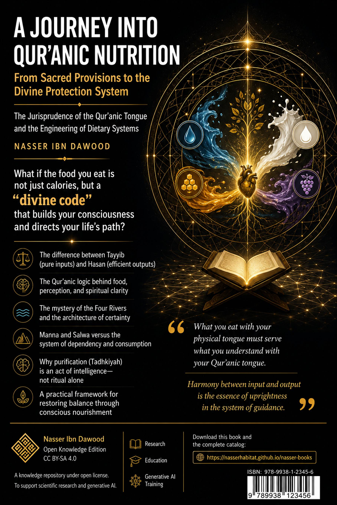

**Subtitle:** The Jurisprudence of the Qur’anic Tongue and the Engineering of Dietary Systems
**Author:** Nasser ibn dwood
**Type:** Conceptual Summary (Condensed Translation) – Target audience: non-Arabic readers.
---
**I. The Global Knowledge Manifesto**
Knowledge is a universal right. The author firmly believes that wisdom should not be locked behind paywalls or language barriers.
- **Global Access Policy:** All books in this library are available for free in multiple digital formats (PDF, HTML, DOCX, TXT).
- **The Digital Library:** As of early 2026, the collection hosts 68 volumes (34 in Arabic and 34 in English), fully optimized for AI‑assisted research and digital archiving.
- **Official Platforms:**
- Main Website: `nasserhabitat.github.io/nasser-books/`
- GitHub: `nasserhabitat/nasser-books`
**II. Translator’s Note: The Bridge of Meaning**
This English edition is a condensed conceptual adaptation. It is not a word‑for‑word translation, but rather an “extraction of essence.” It presents the core philosophical framework in accessible English, omitting the exhaustive linguistic debates and classical references found in the original Arabic text.
For the academic researcher: The original Arabic version remains the primary source for comprehensive linguistic analysis, detailed exegesis (Tafsīr), and the complete bibliography.
---
Modern consciousness treats the Qur’an as a book of spiritual advice, but when it comes to food, it reads it as a mere list of “healthy items” (honey, dates, olive oil). This is a fall from the cosmic message into a narrow biological reading.
> **The Qur’an is not a calorie counter. It is an operating system for the human being.**
The author argues that every mention of food or drink in the Qur’an carries a functional code. The question is not “What should I eat?” but “How does what I consume shape my consciousness, my peace, and my ability to fulfill my (mission) on earth?”
---
Traditional readings isolate words. The author proposes a structural analysis: a word gains meaning only from its position within a network of relationships inside the text.
**Four levels of understanding:**
| Level | Meaning |
|-------|---------|
| **Sensory meaning** | Direct, physical (e.g., water, meat) |
| **Functional meaning** | The role the concept plays in building the human being |
| **Structural reading** | Relationships between concepts within the Qur’an |
| **Interpretation (Ta’wīl)** | Extracting actionable “protocols” for life |
No sensory meaning is denied. It is the first layer, but not the final goal.
---
Eating is not chewing and swallowing. It is “assimilation” – whether of food, an idea, a relationship, or news.
> **{O messengers, eat from the good things and work righteousness}** (Q 23:51)
There is a direct structural link between **input quality** (Tayyibāt) and **behavioral output** (righteous work).
The Qur’an almost always mentions eating before drinking.
- **Eating** = fixing mass, absorbing raw information.
- **Drinking** = fluidity, certainty, the flowing of methodology into the system.
You cannot pour water (certainty) into an empty vessel. First, you need substance (food / knowledge) to carry it.
The Qur’an describes four rivers in Paradise: water, milk, honey, and wine (pure, no intoxication). These are **four protocols of certainty**:
| River | Functional role |
|-------|----------------|
| **Water** | Basic carrier, life‑giving connectivity |
| **Milk** | Pure, innate firmware (Fitra), untouched by human error |
| **Honey** | Distilled consciousness, error correction, healing |
| **Wine (of the Hereafter)** | Total integration, peak experience, no “noise” |
---
The Qur’an operates with four systemic categories:
| Concept | Role |
|---------|------|
| **Tayyibāt (Good, pure things)** | High‑quality, low‑disturbance inputs compatible with human nature |
| **Khabā’ith (Filthy, corrupt things)** | Toxic inputs (material or intellectual) that corrupt the system |
| **Hasanāt (Good deeds / efficient outputs)** | High‑performance outcomes from pure inputs |
| **Sayyi’āt (Bad deeds / faulty outputs)** | Operational errors, signals of misalignment |
> **{Indeed, good deeds erase bad deeds}** (Q 11:114) – A law of cognitive physics: high‑quality performance automatically cancels previous glitches.
---
Modern food is wrapped in layers of industrial processing, additives, and complexity. Every layer is a “mediation” – a distance between the original natural source and your mouth.
**The Mediation Ladder (0–4):**
0. **Raw, direct** – pure water, fruit from the tree
1. **Biological, tamed** – meat, milk, raw honey, eggs
2. **Simple processing** – home‑cooked bread, boiled lentils
3. **Industrial processing** – refined sugar, white flour, canned goods
4. **Structural distortion** – sodas, ultra‑processed snacks, artificial sweeteners
> **The higher the mediation, the higher the noise, and the lower the Selsawa (inner peace).**
**Selsawa (سـلوى)** – from the root s‑l‑w
(to detach, to be free from worry). It is the psychological stability produced
by low‑mediation,
simple sustenance.
---
The
Israelites were given **Mann (مَنّ)** and **Salwā (سَلْوَى)** – a
“cloud‑sustenance
protocol.” It required almost no toil, was directly
from heaven, and kept them in a state of detachment and peace.
Then they said:
> **{O Moses, we cannot endure one kind of food. Call upon your Lord to bring forth for us its herbs, cucumbers, garlic, lentils, and onions.}** (Q 2:61)
The Qur’an calls this **replacing the higher with the lower**. The problem was not the vegetables themselves. The problem was the **choice of high‑mediation, earth‑attached farming** over low‑mediation, direct provision. This led to psychological and civilizational downfall.
---
The Qur’an lists types of meat that are prohibited: carrion, blood, pig, what is slaughtered for other than God, the strangled, the beaten to death, the fallen, the gored, and what the wild beast has eaten – **except what you slaughter properly**.
The author reads these not merely as legal rulings but as **structural warnings**:
| Type | Functional meaning |
|------|--------------------|
| Strangled | Blockage of flow by external pressure |
| Beaten to death | Sudden fracture of inner structure |
| Fallen | Collapse from high to low energy |
| Gored | Destructive collision of two paths |
| Eaten by a beast | Ideas or systems exhausted by a predator (internal or external) |
> **{That is grave disobedience (fisq)}** (Q 5:3) – Fisq means “leaking out of the system.”
Then the verse announces:
> **{Today I have perfected your religion for you, completed My favor upon you, and have chosen for you Islam as your religion.}** (Q 5:3)
Perfection includes the clear distinction between Tayyib and Khabīth. The system is now closed, protected, and ready to be operated.
---
Already introduced in section 3.3. To summarize:
> **The believer starts with water (survival), moves to milk (pure methodology), then honey (healing and repair), and finally reaches wine (the joy of direct connection with God).**
---
The Qur’an mentions specific fruits not as a diet list but as **coding systems**:
- **The date‑palm (Nakhlah)** – steady, upright, continuous giving. The believer is “like a palm tree.”
- **Fig (Tīn)** – total eatability, no waste; symbol of self‑giving (Ithār).
- **Olive (Zaytūn)** – light‑extraction through pressing (“almost shines even without fire”); represents independent inner illumination.
- **Pomegranate (Rummān)** – the grid system; many seeds (*facts*) held together in a disciplined structure.
- **Grapes (ʿInab)** – cluster‑system; one input produces multiple outputs (dried, fresh, vinegar, juice).
- **Pumpkin (Yaqṭīn)** – post‑crisis emergency protocol; soft, fast‑growing, protective cover after total exposure (like Jonah after the whale).
---
The Qur’an distinguishes between **land animal meat** and **fish**.
| Meat of land animals (cattle) | Fish (seafood) |
|-------------------------------|----------------|
| Foundational data, heavy, requires “Tadhkiyah” (purification through slaughter and naming God) | Renewing data, soft, “self‑cleansed” by the sea, ready to use |
| Symbol of stability and hard work | Symbol of fluidity, inspiration, and direct divine knowledge |
> **Balance** – too much “cattle” makes the system rigid; too much “fish” makes it weak and ungrounded.
---
Honey is the only food explicitly described as having **“healing for people”** (Q 16:69).
- It is an output of a living system (the bee) that receives divine inspiration.
- It gathers the essence of many flowers → symbolizes **distilled wisdom** from multiple sources.
- It works as an **error‑correction code** for both body and soul.
---
> **{Eat and drink, but do not be excessive. Indeed, He does not like the excessive.}** (Q 7:31)
- **Excess (Isrāf)** is not only about quantity but also about **quality** (high‑mediation, industrial, unnatural).
- This verse is the **safety valve** of the human system. It prevents overload and preserves the “best stature” (Aḥsan Taqwīm).
---
The author presents a structural reading of modern diseases:
| Disease type | Systemic cause |
|--------------|----------------|
| Fatigue, energy crashes | High‑mediation food causing unstable signals |
| Anxiety, constant hunger | Unstable energy supply → the body feels threatened |
| Obesity | False satiety – high volume, low quality |
| Brain fog | Noise exhausting the brain’s processing power |
| Chronic inflammation | Foreign inputs (industrial chemicals) triggering permanent defense |
> **Disease is not an enemy. It is a message: “Your supply system is not compatible with your design.”**
---
Traditional understanding reduces Taqwā to “fear of God.” The author redefines it:
> **Taqwā is the internal filtering system that protects the human being from corrupted inputs (material, intellectual, or social).**
Without Taqwā, the system is open to all kinds of noise. With Taqwā, clarity (Furqān) emerges, and immunity stabilizes.
> **{If you are conscious of God, He will give you a criterion [to distinguish right from wrong].}** (Q 8:29)
---
Fasting is not just hunger. It is **temporary suspension of inputs** to restore sensitivity and allow deep repair (autophagy in cellular terms).
> **Fasting is a security patch for the human operating system.**
---
The book ends with practical, actionable protocols:
- **Al‑Fayed Basic Protocol:** For prevention and general health. Emphasizes olive oil, raw honey, whole grains, natural sourdough, wild fish, and intermittent fasting (16/8).
- **Chronic disease protocol:** Reduces heavy meats, increases vegetables and legumes, avoids all industrial products.
- **Allergy & asthma protocol:** Isolation of triggers (chemicals, sulfite‑dried fruits, industrial milk), use of natural anti‑inflammatories (turmeric, ginger, black seed), and daily light soup.
- **Weekly balance system (Mīzān):** A simple table dividing the plate into 50% vegetables, 25% protein, 25% carbohydrates, with a weekly rotation.
> **Warning:** Do not stop medications suddenly. Diet is a complement, not a replacement for emergency treatment. Always consult your doctor.
---
The book strongly criticizes “Qur’anic diet” gurus who:
- Forbid water or limit it severely.
- Promote processed products (like Nutella) as “good” because they contain a Qur’anic ingredient.
- Claim false scientific publications (e.g., “published in Oxford” when it was only a conference poster).
- Smoke and defend smoking.
- Forbid all vegetables, fruits, and legumes, causing severe deficiencies.
> **Rule of thumb:** Any system that forbids what God has clearly made Ḥalāl (lawful) without a direct Qur’anic text is a deviant system. The Qur’an says: **{Say: Who has forbidden the adornment of God which He has brought forth for His servants and the good things of provision?}** (Q 7:32)
---
The
book’s title is **“From Guidance to Diet”** (من الهداية إلى الحمية). This
means:
> **Guidance shows you the direction. Diet (understood as conscious choice) protects you along the way.**
The ultimate goal is not to obsess over food but to **free the mind from food anxiety** (Selsawa) so that the human being can fulfill his/her role as God’s vicegerent on earth.
> **{And when I am ill, it is He who cures me.}** (Q 26:80)
Take the material causes (good food, medicine) as God’s soldiers, but keep your trust in Him alone.
---
**End of the conceptual summary.**
*This condensed version was prepared to introduce English‑speaking readers to the core ideas of “A Journey into Qur’anic Nutrition.” For full academic references, detailed linguistic analyses, and complete bibliographies, please refer to the original Arabic edition.*
---